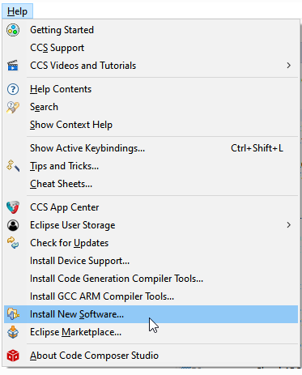
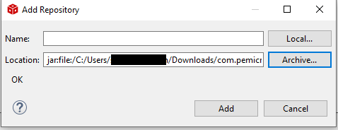
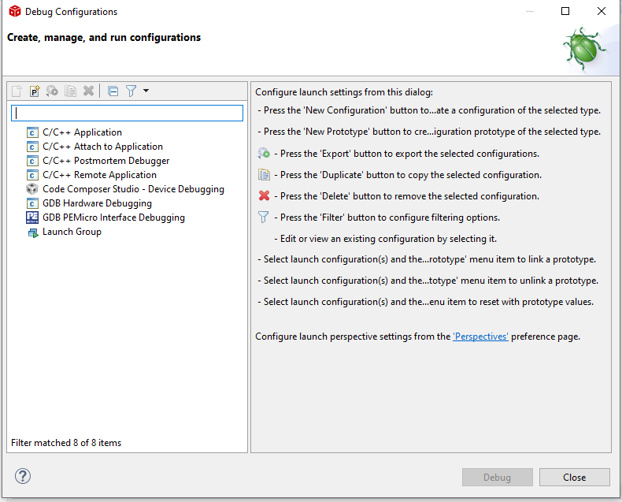
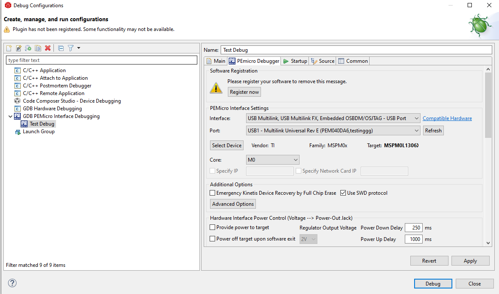
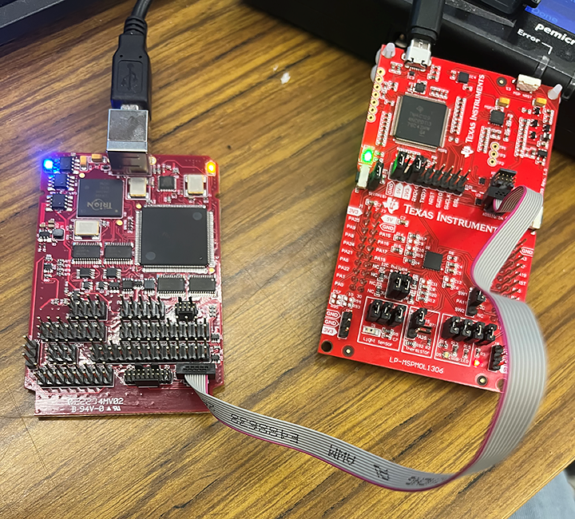

将 PEmicro 接口与 MSPM0 配合使用¶
1. 引言¶
以下步骤将向用户演示如何将 PEmicro 的编程工具与 TI 的 MSPM0 器件配合使用。
2. 先决条件¶
开始前，用户应确保其使用的是最新 PEmicro 驱动程序。可通过以下链接获取：
3. 配置 TI 的Code Composer Studio （CCS）IDE¶
3.1. 安装 PEmicro 的插件¶
在 CCS 菜单栏中，依次点击“Help → Install New Software”。
 按如下所示添加 PEmicro 存储库。点击“Add”按钮打开“Add Repository”对话框。
然后点击“Archive”导航到下载的插件文件，并选择此文件。
 用户可根据需要为存储库命名。选项随后将显示在“Available Software”窗口中。

选择适当插件，并按照说明继续安装
注意：如果插件未显示在窗口中，用户可尝试调整 CCS 代理设置。
选择“GNU ARM PEmicro Debugging Support”和“PEmicro ARM Device Expansion Plug-in”
3.2. 调试配置¶
在 Project Explorer 中右键点击工程名称（本示例中为“Test”），显示以下对话框：

然后选择“Debug Configurations”打开此窗口。
 双击“GDB PEmicro Interface Debugging”，创建“Test”工程的调试实例。
 对器件进行编程和调试
3.3. 设置和物理连接¶
要将 PEmicro Multilink 或 Cyclone 用作调试接口，用户必须确保将 TI MSPM0 目标电路板配置为使用此选项，而非内部 XDS110-ET 调试探针。此过程包括从 J101 隔离块上拆下任何跳线，然后将 Arm 调试探针（如 PEmicro Multilink）连接至 J103 接头。还有一个跳线会影响电源考虑因素。建议用户认真遵循 TI 的明确说明，这可在 TI MSPM0 Launchpad 用户指南的“使用外部调试探针而非板载 XDS110-ET”部分中找到。
PC 连接到 Multilink 或 Cyclone（通常通过 USB 电缆），然后 Multilink 或 Cyclone 上的 10 引脚迷你 Arm 接头通过带状电缆连接至 TI 电路板上的 J103 接头。下面显示了连接至 TI MSPM0 目标电路板的裸 Multilink：
 Fig. 1 通过带状电缆连接至 TI MSPM0 电路板上 J103 接头的裸 Multilink¶
4. 在 Keil uVision IDE 上将 PEmicro 工具与 TI MSPM0 配合使用¶
通过“Options for Target”->“Use”中的下拉框，用户可选择“Pemicro Debugger”，如下所示：

5. 在 IAR Workbench for Arm IDE 上将 PEmicro 工具与 TI MSPM0 配合使用¶
在“Options for Node MSPM0x_security”下的“Debugger”类别中，用户应从“Driver”下拉框中选择“PE micro”，如下所示：